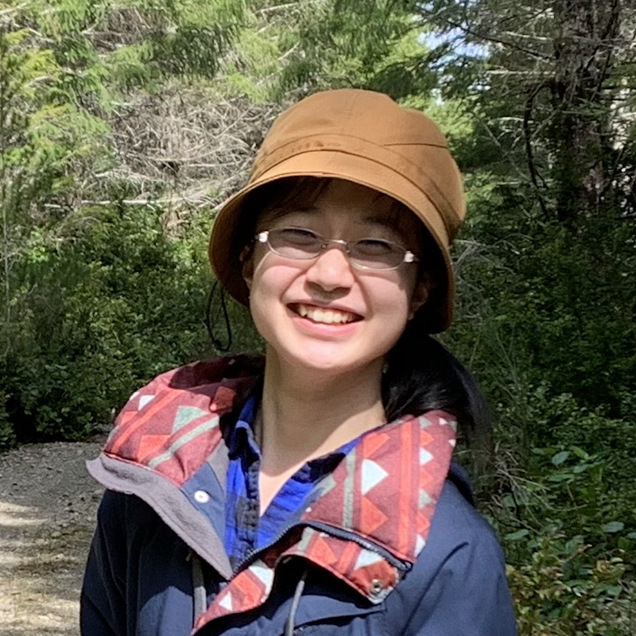

Xingyue Zhang M.S., School of Environmental and Forest Sciences About meI hold an M.S. from the School of Environmental and Forest Sciences at the University of Washington and a B.S. in Environmental Science and Management from UC Davis, where I studied soil science, ecological modeling, and environmental data analysis. My current research, in collaboration with the Department of Applied Mathematics and Electrical & Computer Engineering at UW, applies data-assimilation and machine learning methods—particularly the SHRED family of architectures—to environmental science problems including remote sensing, landslide dynamics, and geophysical reconstruction from sparse observations. I also work as a full-stack developer building web applications. Prior to my current work, I spent 14 quarters as an instructor/teaching assistant across courses in soils, forestry, wildlife, and ecosystems at UW. I can work with English, Chinese, Japanese (JLPT N1), and am learning Spanish, Arabic, and German. News
[2025]
Started collaboration with the Department of Applied Mathematics/ECE at UW on SHRED-based methods for environmental and geophysical applications.
[2025]
Completed M.S. at UW School of Environmental and Forest Sciences.
Selected publications
ContactEmail: xyzhamy [at] gmail [dot] com |